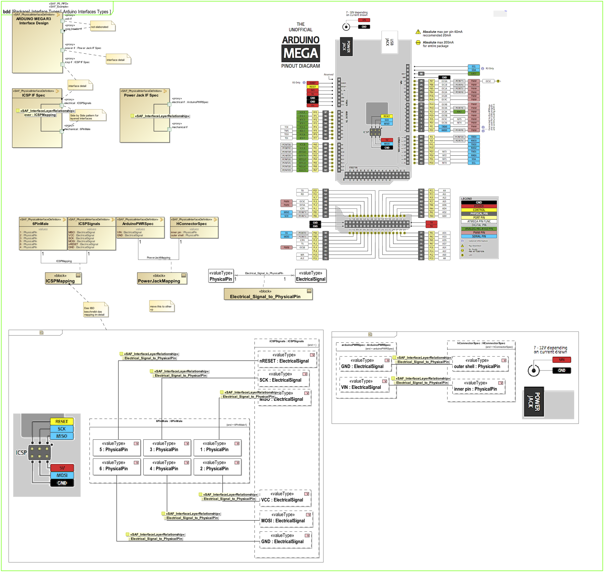
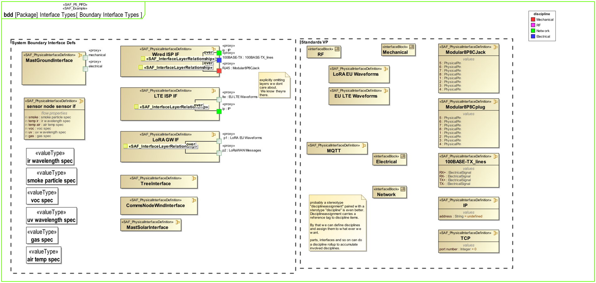
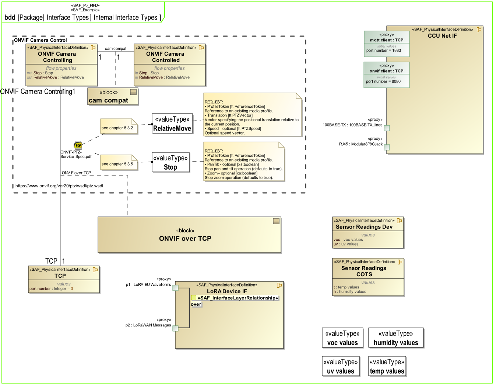
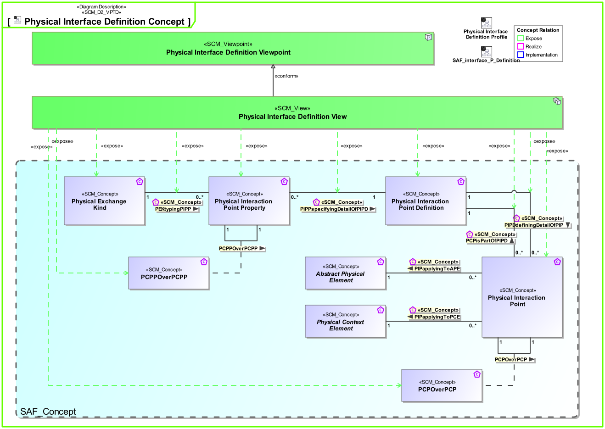
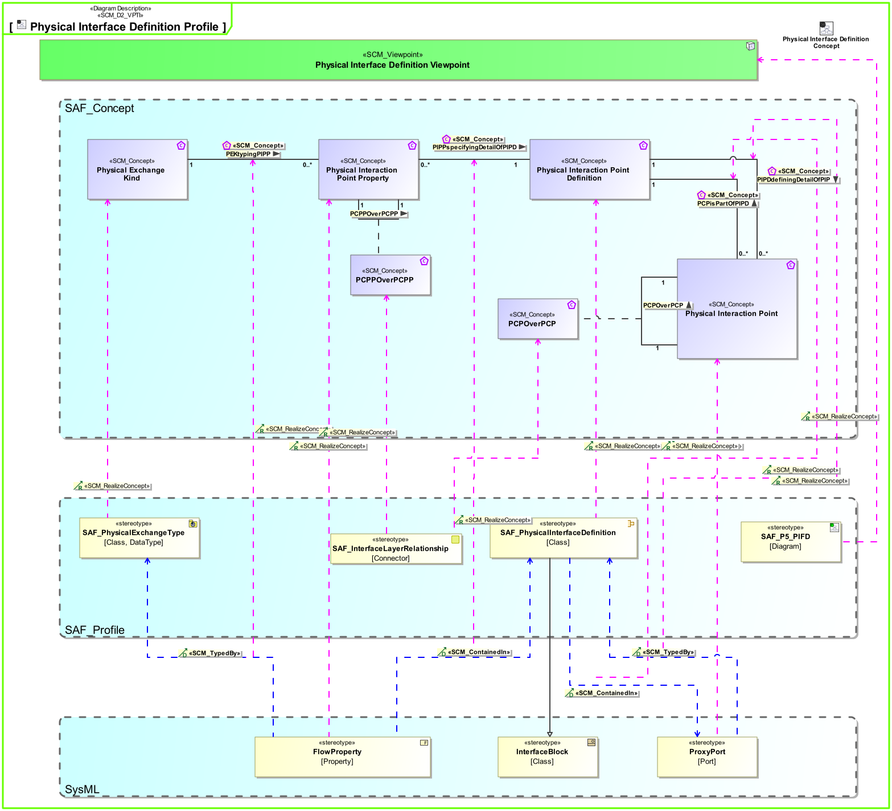

P5_PIFD Physical Interface Definition Viewpoint
| Domain | Aspect | Maturity |
|---|---|---|
| Physical | Interface |



The Physical Interface Definition Viewpoint captures definitions for physical interfaces. It allows to adopt long-lived standards and to harmonize physical interface definitions to improve interchangeability, interoperability, and portability.
The Physical Interface Definition Viewpoint supports the “create system design” activity included in the “Design Definition Process” activities of the INCOSE SYSTEMS ENGINEERING HANDBOOK 2023 [§2.3.5.5] and contributes to the artifact “System Interface Definition”.
Furthermore, the viewpoint supports the “Interface Management” approach of the INCOSE SYSTEMS ENGINEERING HANDBOOK 2023 [§3.2.4].
A block definition diagram (BDD) featuring Physical Interface blocks with ports, and flow properties. Compatibility between Physical Interface blocks is expressed by associations and association blocks. Physical Interface blocks may be specialisations of others (use of generalisation). Note: When ports are used these shall be proxy ports and be typed by interface blocks.
A tabular format listing Physical Interface blocks, their ports, and flow properties.
The following Stereotypes / Model Elements are used in the Viewpoint:
The Diagram shows the concepts exposed by the viewpoint, and related concepts if necessary.

| Concept | Documentation |
|---|---|
| PCPisPartOfPIPD | specifies that a physical interaction point can be a part of a physical interaction point definition. This fosters reuse and allows structuring of definitions. |
| PCPOverPCP | Specifies the fact that a physical interaction point communicates / transfers / flows / over an other physical interaction point. Used to define layered physical interfaces, and show layer relationships between interfaces. |
| PCPPOverPCPP | Specifies the fact that a physical interaction point property communicates / transfers / flows / over an other physical interaction point property. Used to define layered physical interfaces, and show layer relationships between interface details. |
| PEKtypingPIPP | Specifies the fact that a Physical Exchange Kind defines the type of a Physical Interaction Point Property. |
| Physical Exchange Kind | Specification for any kind of physical item (energy, material, information, etc.) to be exchanged on Physical Level. This is the realization of the specification made by System Domain Kinds. |
| Physical Interaction Point Definition | Specifies the exchange capabilities of an interaction point on Physical Level. |
| Physical Interaction Point Property | Specifies a detail of an interaction point on Physical Level. |
| Physical Interaction Point | Specifies the existence of an interaction point on Physical Level. |
| PIPDdefiningDetailOfPIP | Specifies the fact that a Physical Interaction Point Definition defines the exchange capabilities of a Physical Interaction Point. |
| PIPPspecifyingDetailOfPIPD | Specifies the fact that a Physical Interaction Point Property is a detail of a Physical Interaction Point Definition. |
The Diagram shows the implementation of exposed concepts.
